![]()
shiny::runApp(
here::here(
"Day4_SSFs_advanced/01_Simulations/apps/redistributionkernel.R"
)
)Simulating Space Use from fitted iSSFs
Analysis of Animal Movement Data with R 2 (together with Brian Smith)
April 22, 2026
Outline & Motivation
Background
- Why we need simulations for iSSFs
- How to simulate
- Why to simulate
Before we start
Think-pair-share: Can we use a HSF/RSF to predict a possible path of an animal.
Why we need simulations for SSFs
H/RSFs and iSSFs
- RSFs:
- There is no movement model built in that we can use when simulating space use.
- It is common practice to multiply coefficients with resources, exponentiate the result, and normalize to obtain a utilization distribution.
\[ UD(s_j) = \frac{w(s_j)}{\sum_{j = 1}^G w(s_j)} = \frac{\exp(\sum_{i = 1}^n\beta_i x_i(s_j))}{\sum_{j = 1}^G \exp(\sum_{i = 1}^n\beta_i x_i(s_j))} \]
- iSSF:
- We have a simple movement model built-in, that allows integration of the movement process.
- We can no longer simply multiply selection coefficients with resources.
For iSSFs this is a bit more complicated
If we take the same approach for iSSFs, we introduce a bias because we are neglecting conditional formulation of iSSFs when creating maps.
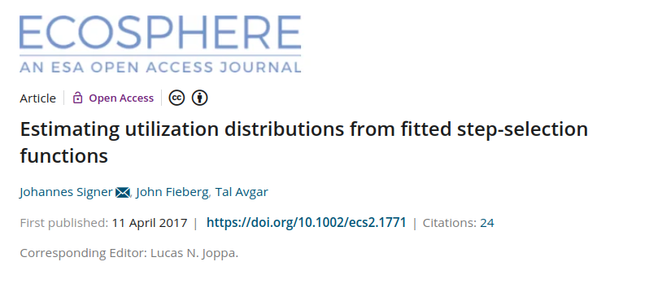
We used simulations to compare the two approaches:
- naive
- simulation-based
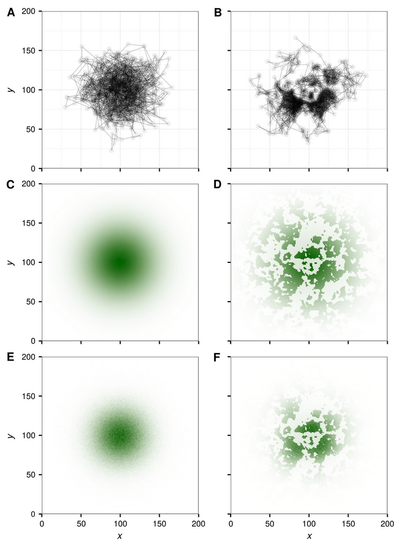
- Comparison between true utilization distribution and simulated utilization distribution:
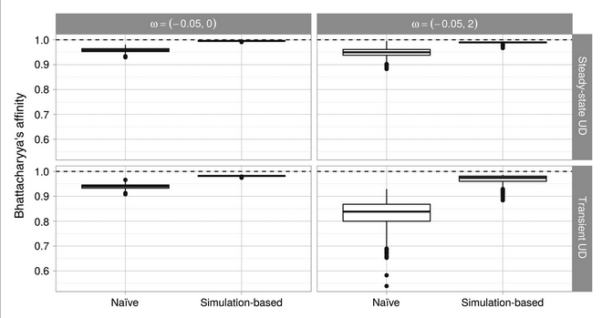
- The bias becomes even larger if selection is stronger:
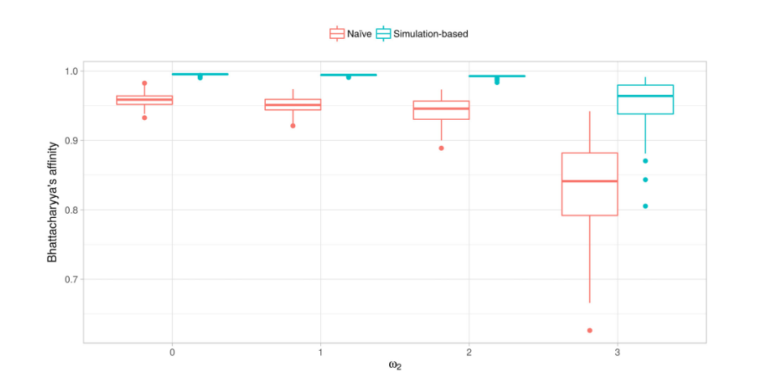
How to simulate
The redistribution kernel
\[\begin{equation*} {\textcolor{darkblue}{(\mathbf{s}, t + \Delta t)}} {|\textcolor{ligthblue}{u(\mathbf{s}', t)}} \frac{{\textcolor{violet}{w(\mathbf{X}(\mathbf{s});\mathbf{\beta}(\Delta t))}}{\textcolor{darkgreen}{\phi(\theta(\mathbf{s}, \mathbf{s'}), \gamma(\Delta t))}}} {{\textcolor{grey}{\underbrace{\int_{\tilde{\mathbf{s}} \in G} w(\mathbf{X}( \tilde{\mathbf{s}});\mathbf{\beta}(\Delta t))\phi(\theta(\tilde{\mathbf{s}}, \mathbf{s}');\gamma(\Delta t))d\tilde{\mathbf{s}}}_{\text{Normalizing constant}}}}} \end{equation*}\]
We want to model the probability that the animals moves to position \(\textcolor{darkblue}{\mathbf{s}}\) at time , given it is at position \(\textcolor{lightlbue}{\mathbf{s'}}\) at time \(\textcolor{blue!50}{t}\).
Redistribution Kernel
Try it here: https://jmsigner.shinyapps.io/apps/ or start the app locally (Day4_SSFs_advanced/apps/redistributionkernel.R)
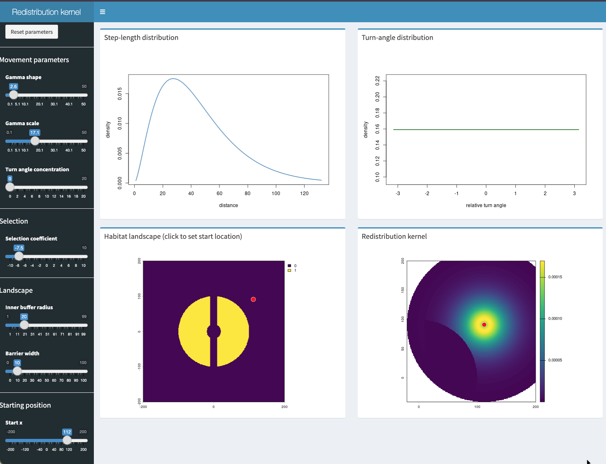
To run the app locally use:
Implementation in amt
In amt there is the function redistribution_kernel(), with several arguments (some are discussed here):
x: This is the model and should be either the result of an iSSF fitted to data with the functionfit_issf()or a model built from scratch with the functionmake_issf_model().
map: This is the landscape (with the resources). This needs to be one or moreSpatRasts from the terra package.
start: The start position and start direction.
Redistribution kernel…
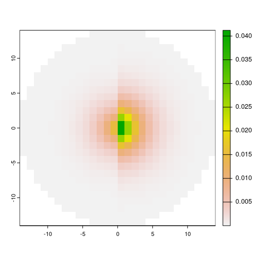
… as a function of the current position of the animal
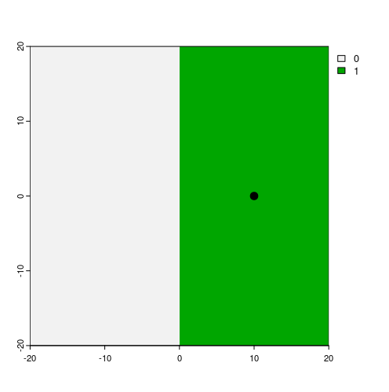
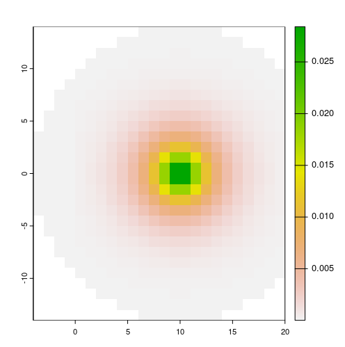
More details
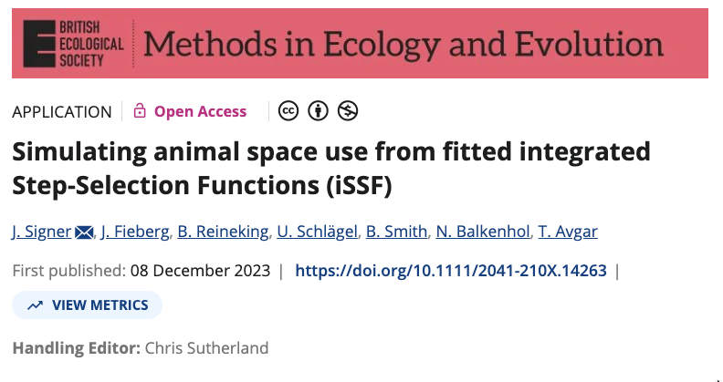
Why to simulate
- Understanding the model that you use
- Model validation
- Where will the animal be next?
- Use fitted SSFs for connectivity analyses
Understanding the model that you use
Here relatively simple scenarios can be explored
What about?
The model specification can be abstract, e.g., what does the interaction between a covariate at the start of a step and the cosine of the turn angle mean?
For example: \(\sim \beta_1 \cos(\text{ta}) x_\text{start}\)
What how does the redistribution kernel for \(\sim \beta_1 \cos(\text{ta}) x_\text{start}\) look, if \(\beta_1 = -4\)?
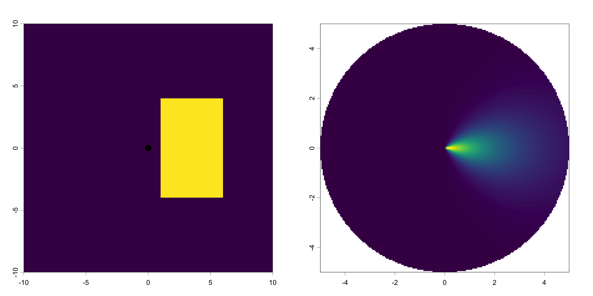
Same model, but a different position in geographic space.
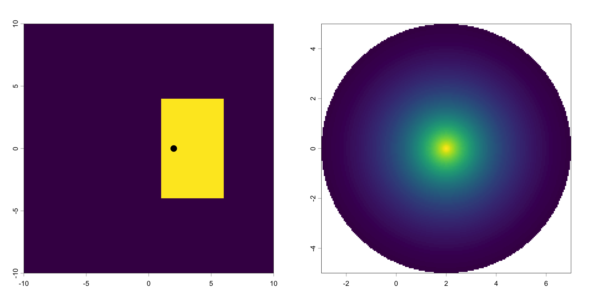
What if the animal shows a preference for \(x\)? E.g., \(\sim \beta_1 \cos(\text{ta}) x_\text{start} + \beta_2x_\text{end}\) and \(\beta_2 = 2\).
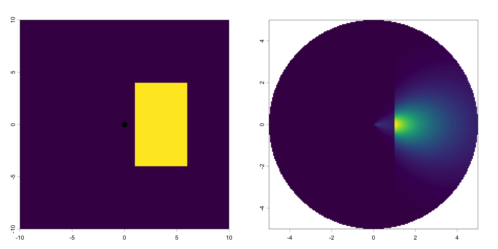
Same model, but different starting position.
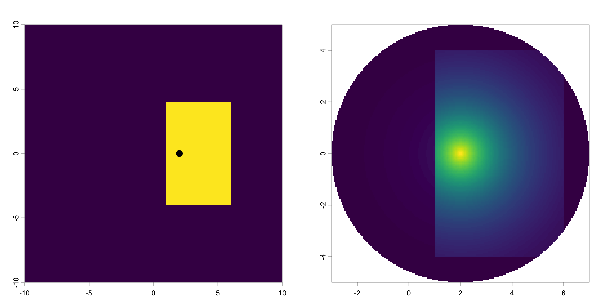
Model validation
To illustrate the use of simulation, we fitted an iSSF to tracking data of a single African buffalo.
We fitted three different models using :
- Base model:
case_ ~ cos(ta_) + sl_ + log(sl_) + water_dist_end - Home-range model:
case_ ~ cos(ta_) + sl_ + log(sl_) + water_dist_end +x2_ + y2_ + I(x2_^2 + y2_^2) - River model:
case_ ~ cos(ta_) + sl_ + log(sl_) + water_dist_end + x2_ + y2_ + I(x2_^2 + y2_^2) +I(water_crossed_end != water_crossed_start)
- For details of the data see: Getz et al. 2007 LoCoH: Nonparameteric kernel methods for constructing home ranges and utilization distributions. PLoS ONE
- Cross et al. 2016. Data from: Nonparameteric kernel methods for constructing home ranges and utilization distributions. Movebank Data Repository. DOI:10.5441/001/1.j900f88t.
The landscape
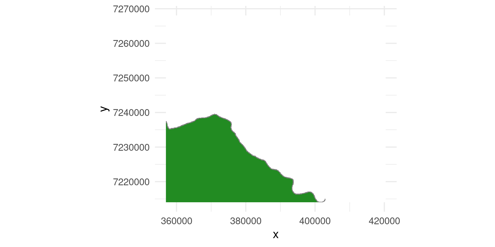
The observed track
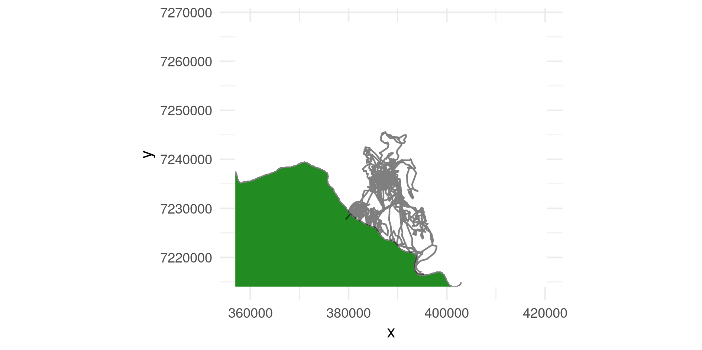
Base model: case_ ~ cos(ta_) + sl_ + log(sl_) + water_dist_end
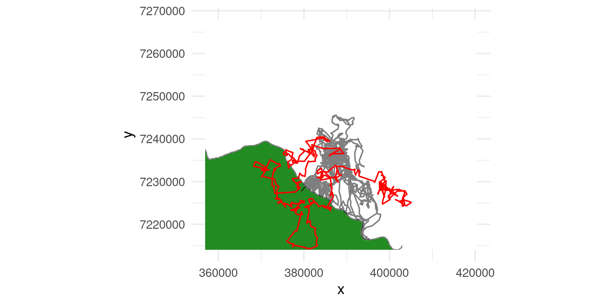
Home-range model: case_ ~ cos(ta_) + sl_ + log(sl_) + water_dist_end + x2_ + y2_ + I(x2_^2 + y2_^2)
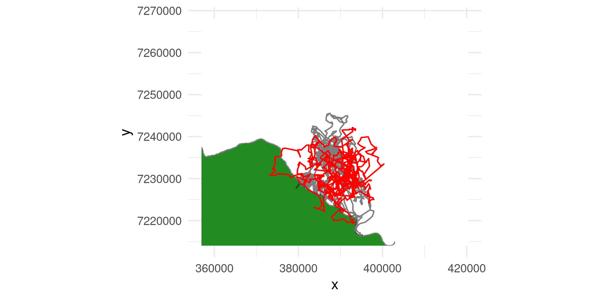
River model: case_ ~ cos(ta_) + sl_ + log(sl_) + water_dist_end + x2_ + y2_ + I(x2_^2 + y2_^2) + I(water_crossed_end != water_crossed_start)
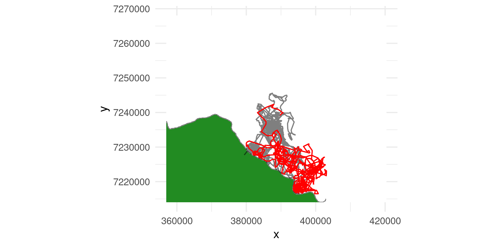
A much better way to approach this:
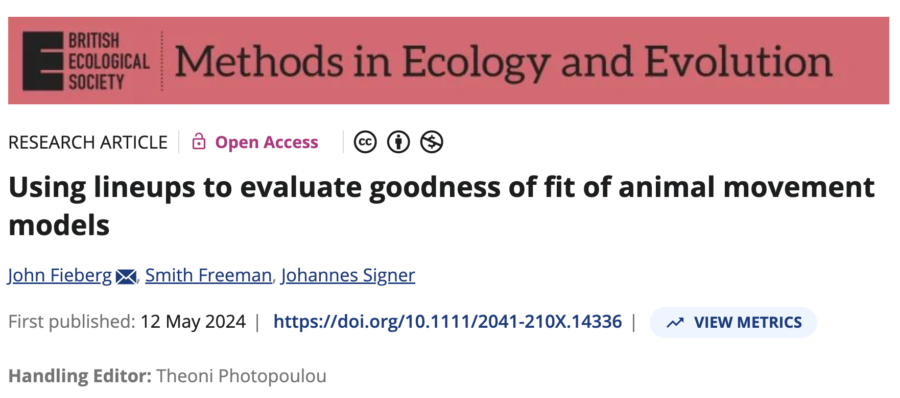
Where will the animal be next?
Predicting the position of the animal in the future from a redistribution kernel.
- First we need to create a slightly bigger landscape.
- Then we have to specify the redistribution kernel again
# Start
start <- make_start(c(0, 0), ta_ = pi/2)
# Model
m <- make_issf_model(
coefs = c(x_end = 2),
sl = make_gamma_distr(shape = 2, scale = 2),
ta = make_vonmises_distr(kappa = 1))
# Redistribution kernel
rdk.1a <- redistribution_kernel(
m, start = start, map = r,
landscape = "continuous", max.dist = 5,
n.control = 1e4)And now we simulate 15 steps from this redistribution kernel:
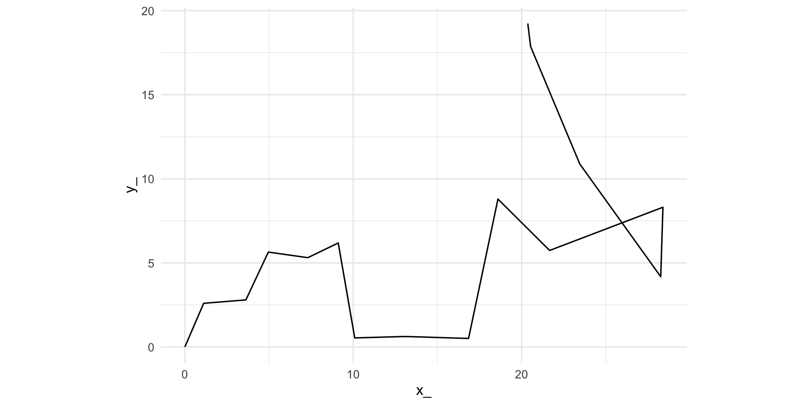
But this is just one realization; let’s repeat this for \(n = 50\) animals:
Paths of 50 simulated animals
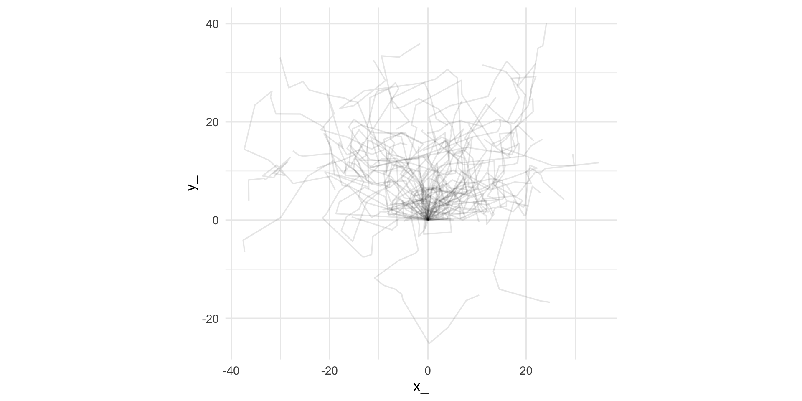
What can we do with this
What is a UD
The utilization distribution (UD) is “a probability distribution … for the use of space with respect to time. That is, the utilization distribution usually calculated shows the probabilities of where an animal might have been found at any randomly chosen time.”
— Powell and Mitchell 2012 (https://doi.org/10.1644/11-MAMM-S-177.1)
Types of UDs
We distinguish between two different types of Utilization Distributions (UDs):
- Transient UD (TUD) is the expected space-use distribution over a short time period and is thus sensitive to the initial conditions (e.g., the starting point).
- Steady-state UD (SSUD) is the long-term (asymptotically infinite) expectation of the space-use distribution across the landscape.
From a redistribution kernel to a map
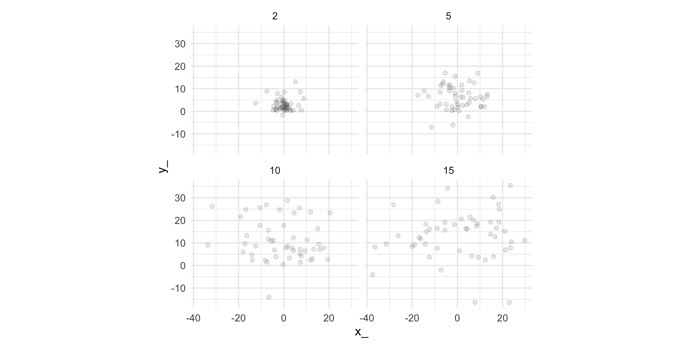
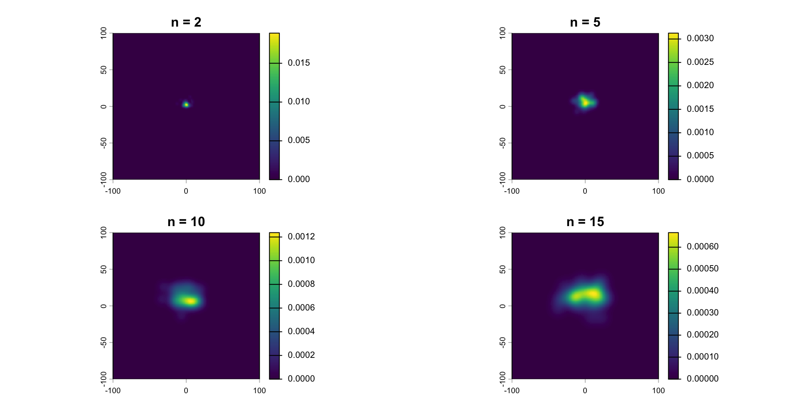
Use fitted SSFs for connectivity analyses
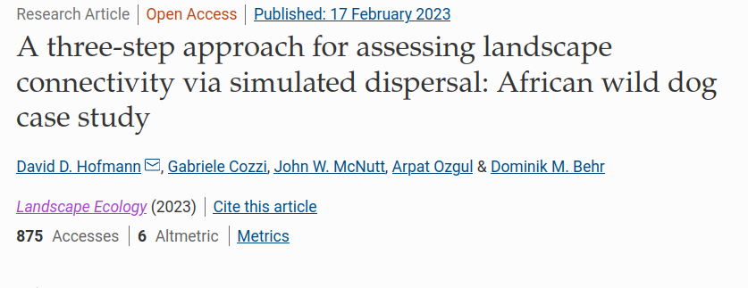
Thank you - Happy to take questions
Johannes Signer (jmsigner@gamil.com) | Simulate from fitted SSFs | Movement Ecology with R 2